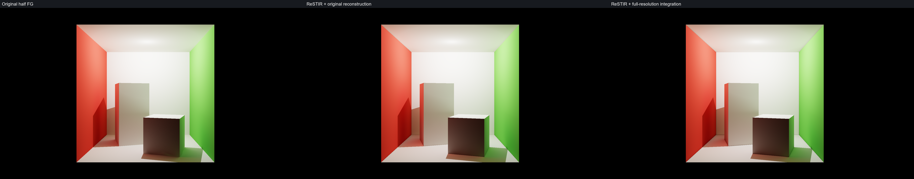
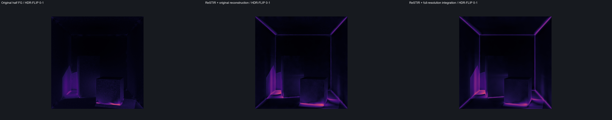
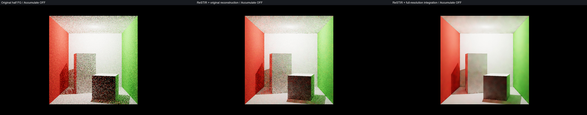
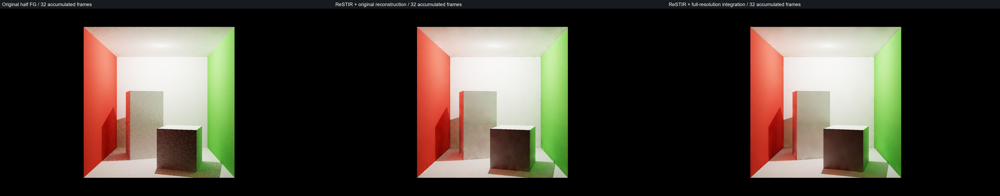

入口：DDGI → Final gather → ReSTIR gather (experimental)，默认关闭。开启后 Temporal reuse、Spatial reuse 默认开启；Full-resolution integration 默认关闭。Accumulate 仍默认开启，可独立关闭；NRD 未启用。
重建是独立选项：默认在半分辨率位置对选中的 reservoir 样本着色，再沿用 4×4 深度／法线引导重建（混合解调后的间接光，再乘当前像素反照率）。可选全分辨率积分会读取邻域 reservoir，在当前像素重算方向、BRDF、几何变换和可见性，再混合这些贡献。它不是直接混合邻居最终 RGB，也不是 ReSTIR 的必要步骤。
本场景结果：ReSTIR＋原重建的单帧 MSE 比原 FG 低约 12%，但 16384 帧累计 MSE 约为原 FG 的 3.33 倍，GPU 1.15→1.83 ms。可选全分辨率积分单帧 MSE 低约 54%，但长累积 MSE 约为原 FG 的 6.92 倍，GPU 约 3.03 ms。本次接入没有提高静态累计精度，因此保留为默认关闭的实验路径，不替换原 FG。
1920×1080、Lambert Cornell、同一顶灯点光源。半分辨率 960×540；三组均开启相同的八帧采样相位 jitter。预热 2560 帧，先旁路 Accumulate 采集 16 帧，再各累计 16384 帧。PT 复用同场景 65536 spp 未降噪参考。显示统一 +3EV/ACES/sRGB。时间历史上限 20 个有效候选，空间 2 轮×4 邻居、半径 8 个粗像素；可选全分辨率积分为 16 样本、kernel size=3。GPU 耗时为 511 个区间均值。
| 方案 | 16384 帧 MSE | HDR-FLIP | 未累积单帧 MSE（16 帧平均） | GPU ms |
|---|---|---|---|---|
| Original half FG | 9.767776e-07 | 0.046665 | 0.0001884607 | 1.151 |
| ReSTIR + original reconstruction | 3.254617e-06 | 0.057595 | 0.0001656489 | 1.834 |
| ReSTIR + full-resolution integration | 6.759281e-06 | 0.063324 | 8.734836e-05 | 3.026 |
这是接入验证，不把 16384 帧直接称为充分收敛。8192→16384 帧检查、单帧时间方差和每个 checkpoint 的误差见 完整数据。历史复用会造成样本相关；单帧更平滑不等于 Accumulate 收敛更快。图像残余误差包含采样误差、DDGI 近似和复用／重建偏差。

共用固定 [0,1] Magma 色标：暗紫误差小，红橙黄误差大；深蓝灰为统计 mask 外区域，不是各图独立归一化。



Visibility → DDGI：ProbeUpdate → PrimaryShading → ReSTIRInitial → ReSTIRTemporal → ReSTIRSpatial（两轮 ping-pong）→ ReSTIRIntegrate → Reconstruct → Accumulate → Display。默认 Integrate 在半分辨率只对自身 reservoir 着色；开启全分辨率积分后按全分辨率 dispatch，Reconstruct 退化为直接合成。关闭 ReSTIR 则使用原来的 HalfGather。
| GPU 子阶段 ms | 原 FG | ReSTIR＋原重建 | ReSTIR＋全分辨率积分 |
|---|---|---|---|
| Visibility | 0.154 | 0.155 | 0.155 |
| DDGI/ProbeUpdate | 0.216 | 0.217 | 0.219 |
| DDGI/PrimaryShading | 0.213 | 0.212 | 0.208 |
| DDGI/HalfGather | 0.277 | 0.000 | 0.000 |
| DDGI/ReSTIRInitial | 0.000 | 0.221 | 0.222 |
| DDGI/ReSTIRTemporal | 0.000 | 0.201 | 0.201 |
| DDGI/ReSTIRSpatial | 0.000 | 0.381 | 0.382 |
| DDGI/ReSTIRIntegrate | 0.000 | 0.151 | 1.350 |
| Reconstruct | 0.115 | 0.120 | 0.111 |
| Accumulate | 0.149 | 0.148 | 0.150 |
| Display | 0.025 | 0.026 | 0.026 |
参考文件为 D:/Unreal/UnrealEngine/Engine/Shaders/Private/Lumen/LumenReSTIRGather.usf 及对应 cpp。已具备均匀半球初始采样、实际命中样本 reservoir、时间重投影与 3×3 历史匹配、空间重采样及 Jacobian、可选全分辨率 spiral 积分。空间两轮×4 邻居、全分辨率 16 样本与所读 UE 默认阶段数量一致；半径和几何阈值有 Falcor 场景适配。
这不是 UE 渲染器的逐行移植。命中点光照来自 Falcor 材质＋直接光＋DDGI，替代 Lumen Surface Cache；使用 Falcor RNG 而非 UE 蓝噪声。可见性使用硬件阴影射线而非 Lumen 的短屏幕空间检测，增加成本。时间复用也使用重连接 Jacobian；最终积分使用 Falcor BRDF 而非 UE 的粗糙镜面近似和 tonemap weighting，尖锐镜面保留独立 FG。未增加 Lumen 的后置双边／时间降噪，继续保留用户选择的 Accumulate。
每个 reservoir 保存命中位置（miss 为方向）、命中法线、辐射亮度、target、W、源表面位置／法线和 M；普通时间复用不重追整条历史着色路径。四个 80 字节结构缓冲，1080p 半分辨率共约 158.2 MiB，初始缓冲在空间阶段复用为 ping-pong。下一帧接收时间阶段历史，不把空间阶段结果反馈回历史。
481×271 奇数尺寸下实际执行通过；验证了全／半分辨率、FG／ReSTIR／时间／空间／全分辨率积分开关的累积重置，及移动镜头时 reservoir 历史继续有效。半分辨率边界采样与重建做了 clamp。原材质 Cornell 的两种积分路径也通过运行与非有限数检查，灯光关闭后会清空历史（不是其他材质的画质评估）。相机移动通过 motion vectors 重投影；灯光、材质、几何变化会保守清空历史，尚未实现动态物体的完整历史运输。
复用在方向变化时近似保持命中点辐射亮度，镜面材质会有局限；极端 Jacobian [0.1,10] 外拒绝和样本接受判定也可能带来偏差，不宣称无偏。被拒绝的邻居不计入合并 M，修正了初版额外压暗的问题。此版主要验证 Lambert Cornell，不能从这组数据推断复杂动态场景性能或画质。